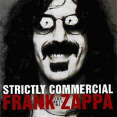
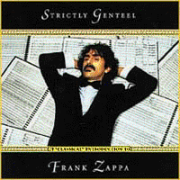
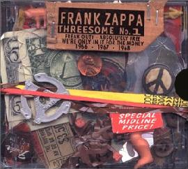
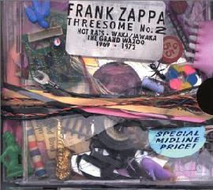

Заппа'zУх!Ой!
русский более или менее регулярный бюллетень для поклонников американского композитора
Frank'а Vincent'а Zappa'ы
Выпуск.41 (23 июня 2002)
Кто троицу любит?
7 октября 1994 года замечательная и абсолютно бесстрашная компания Ryko решилась назваться груздем. Иными словами, сыграла в нашу понтовую национальную игру. А за 5 миллионов прыгнешь с моста? А за 10? А за двадцать? Проще говоря, приобрела на самых кабальных и нелепых с точки зрения нормы чистой прибыли условиях весь каталог Фрэнка Заппы, и с той поры с ним, родимым, за пазухой летит. Ветер свищет, а дна у лукошка все не видно.
Святые люди. Со знанием делопроизводства и основ маркетинга.
Да, совершив нам на радость роковую и непростительную ошибку, Ryko уже восьмой год пытается извлечь даже не прибыль, а просто получить пусть и частичную, но компенсацию за свой красивый, романтический порыв. Выправляет выпукло-вогнутый график, нехороший градус сальдо из крупноблочных Фаренгейтов в мелкорубленные Цельсии пытается перевести. И тоже, благородно. Через ликбез и "мама мыла машу" каждому матросу и солдату.
Неутомимое Ryko строгает сборники. Составляет Аз, Буки и Веди музыкального языка ФЗ, в надежде, что грамотой овладев, граждане из бывших рок-пролетариев не Блюхера и не милорда глупого, а Uncle Meat и Studio Tan с базара понесут.
Такие подвижники. Жертвы любви и умственного несовершенства человечества.
Впрочем, нарезают "мы не рабы, рабы не мы" из графа Льва Толстого ребята с большим понимаем дела, чем ушлые предшественники, MGM'овские циркачи. Первые и последние прижизненные обладатели пусть куцых, но прав на два вершка наследия Фрэнка Винсента. Эти уж определенно думали только о том, как три раза одну шапку продать. Карман набить. О благе и спасении человечества не беспокоились. Свечку ставить не планировали.
За годик, полтора сшили три лоскутных одеяла, чтоб ноженьки не зябли. Касса колесиками звякала, тепло вырабатывала, динамо-машина шиворот навыворот.
Названия из ряда говорящих, можно подумать робот квадратной микросхемой генерировал. Недоделанная железка с пуколкой без нюхалки. Такое же и содержимое, произвольная смесь номеров из списка четырех первых альбомов Фрэнка. Идеи и концепции не больше, чем в сериях счастливых цифр спортлот. Выпали. А почему? Никто не знает. Теория вероятности, комбинаторика - науки с трехъярусными формулами.
Ryko же свою агитационно-просветительскую компанию явно продумало и даже прочувствовало. И потому уверенное в себя, почти как сам маэстро, наш Фрэнк Винсент, старается играть бровями да подмигивать, тасуя и сдвигая учебный материал.
В 1995 пасьянсик разложило для Disco Boy'ев и Dancin' Fool'ов. Хиток к хитку. Десяточки, картишки на самом деле мелкие, но пулек надо много.
Strictly Commercial: The Best Of Frank Zappa. Rykodisc RCD 40500
А в 1997 решило погадать уже солидным людям, Republicans and Democrats, картинок сытым накидало. Все больше дамы, да короли.
Strictly Genteel: The Classical Introduction To Frank Zappa. Rykodisc RCD10578.
|
 |
 |
Не пропали и 1998 с 1999. Еще два домика для закрепленья пройденного. Две антологии. Cheap Thrills и Son Of Cheep Thrills. Охват энциклопедический. Цена микроскопическая.
Для продвинутых Disco Republicans и Dancin' Democtrats. Тех, что по паре Strictly оторвали, а к One Size Fits All перейти все не решаются. А вот им дайджест. Пусть вспыхнут глазки, а железы слюнные себя почувствую одновременно клизмой и водопроводом.
Богоугодное дело творили добрые люди из Ryko. Старались, старались, пытались варваров в греков обратить, любо было, дорого смотреть, и вдруг притихли. То ли деньги считали, то ли макушку чесали. А может быть сосредоточенно и молча наблюдали за подопытными. Ну, как там процесс? Идет? Контора пишет? Кренделя? Или пока еще баранки?
Фигуры! Похоже, все таки, сошелся в Массачусетсе дебет с кредитом академических сезонов и люди в Ryko постановили, что клиент созрел. Переварив цитаты, готов и полное высказывание воспринять.
"Жук жужжит, жевать он может,
Кто травинку в рот положит?"
Хватит метод-брошюр и хрестоматий. Студенту нужны собрания сочинений. Он полочки купил. Такой, наверное, ход мыслей был у ребят из Rykodisc, такие представления об объективной реальности. И чтобы железо не остыло, не отходя от кассы, выдают весною 2002-го голубчики две серии по три диска. Три диска, три альбома по цене двух и в кубатуре полутора.
и
Оформил коробушки живой носитель концептуального постоянства, человек-легенда Кальвин Шенкл. Ура!
Если все правильно, все верно угадали, то будет, надо полагать, в дальнейшем, Преображение и Вознесенье. Сретенье и Успение. Да, хоть бы и Пейсах с Куйрам-Байрамом лишь бы здравствовало Ryko и пластинки Фрэнка, и старые, и новые приобретались без проблем когда приспичит, в любое время дня и ночи, то есть, за доллары, рубли и евро. Грузинские карбованцы, белорусские тенге и киргизские манаты.
Аминь.
|
 |
 |
Ну, а если по существу дела, по вселенской сути музыки FZ, то при прочих равных, компактность - очевидное достоинство. В конце концов Земля всего-то навсего двенадцать тысяч километров в диаметре.
Искренне Ваш, Владимир Советов
http://www.arf.ru/
| Домой | Заппа'zУх!Ой! | Поиск | Хозяин |